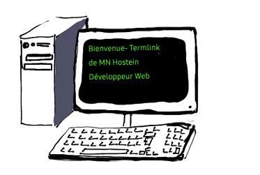

Actuellement au chomage, et peu satisfaite des options d'emploi qui s'offrent à moi, j'ai choisi de me reconvertir.
Faire ce choix était le premier pas, ensuite fallait-il encore opter pour un nouveau domaine de compétences.
Un bilan effectué avec l'organisme Activ'Projet m'a permis de faire un retour sur moi-même, mon expérience, mes compétences et au final, de réaliser ce que j'aime vraiment faire de mes journées. Cela m'a tout naturellement mené au métier de développeur web qui allie certaines de mes compétences à une de mes passions : l'informatique.
Mon premier contact avec un ordinateur a été un vrai coup de foudre et je n'ai jamais cessé de m'en servir depuis,
autant pour le loisir que pour d'autres aspects pratiques de la vie active (faire ses comptes, écrire des courriers, créer des plannings...). Cela fait un moment que l'envie de pousser plus loin mes connaissances sur l'informatique me titillait.
Je suis très enthousiaste à l'idée de découvrir ce nouveau métier et j'ai vraiment hâte de développer de nouvelles compétences sur mon ordinateur.
Marie-Noelle - Curriculum Vitae

🍩Devenir Développeur Web🍩
